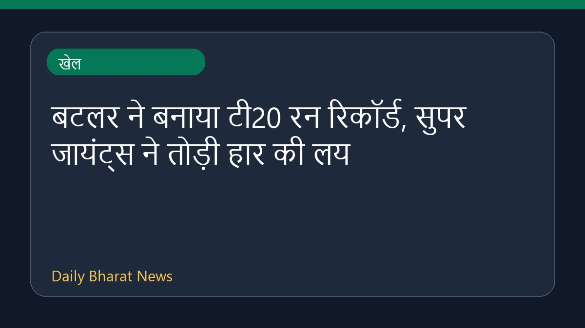

बटलर ने बनाया टी20 रन रिकॉर्ड, सुपर जायंट्स ने तोड़ी हार की लय

क्रिकइन्फो की रिपोर्ट के अनुसार, बटलर ने टी20 क्रिकेट में सर्वाधिक रन बनाने का नया रिकॉर्ड अपने नाम कर लिया है। इसके साथ ही, सुपर जायंट्स की टीम ने अपने हालिया प्रदर्शन में सुधार करते हुए अपनी हार के सिलसिले को समाप्त कर दिया और जीत दर्ज की है। इस मुकाबले से जुड़े अन्य घटनाक्रमों और खेल जगत की अधिक जानकारियों के लिए गूगल न्यूज पर सुर्खियां देखी जा सकती हैं। वर्तमान में इस संबंध में विवरण सीमित उपलब्ध हैं।
मूल स्रोत: Sports News Sources
Buttler takes T20 runs record as Super Giants snap losing streak - Cricinfo ↗
Buttler takes T20 runs record as Super Giants snap losing streak - Cricinfo ↗